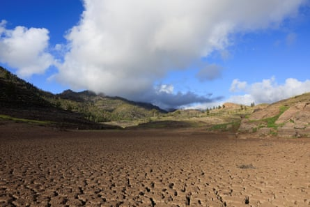

Drought is pushing tens of millions of people to the edge of starvation around the world, in a foretaste of a global crisis that is rapidly deepening with climate breakdown.
More than 90 million people in eastern and southern Africa are facing extreme hunger after record-breaking drought across many areas, ensuing widespread crop failures and the death of livestock. In Somalia, a quarter of the population is now edging towards starvation , and at least a million people have been displaced.
The situation has been years in the making. One-sixth of the population of southern Africa needed food aid last August. In Zimbabwe, last year’s corn crop was down 70% year on year, and 9,000 cattle died .
These examples are just the beginning of a worldwide catastrophe that is gathering pace, according to a report on drought published on Wednesday. In regions across the world, drought and water mismanagement are leading to shortages that are hitting food supplies, energy and public health.
Mark Svoboda, the founding director of the US National Drought Mitigation Center (NMDC), and co-author of the report , said: “This is not a dry spell. This is a slow-moving global catastrophe, the worst I’ve ever seen.”
The report, published by the NMDC, the UN Convention to Combat Desertification, and the International Drought Resilience Alliance, examined in detail more than a dozen countries in four main regions: Africa, south-east Asia, Latin America and the Mediterranean. Taking information from governments, scientific institutions and local sources, the authors were able to build a picture of human suffering and economic devastation.
Parched land at Cueva de las Niñas reservoir in Gran Canaria, Spain.Photograph: Borja Suárez/Reuters
In Latin America, drought led to a severe drop in water levels in the Panama canal, grounding shipping and drastically reducing trade , and increasing costs. Traffic dropped by more than a third between October 2023 and January 2024.
By early 2024, Morocco had experienced six consecutive years of drought, leading to a 57% water deficit. In Spain, a 50% fall in olive production, driven by a lack of rainfall, has caused olive oil prices to double, while in Turkey land degradation has left 88% of the country at risk of desertification, and demands from agriculture have emptied aquifers. Dangerous sinkholes have opened up as a result of overextraction.
Svoboda said: “The Mediterranean countries represent canaries in the coalmine for all modern economies. The struggles experienced by Spain, Morocco and Turkey to secure water, food and energy under persistent drought offer a preview of water futures under unchecked global warming. No country, regardless of wealth or capacity, can afford to be complacent.”
El Niño weather conditions in the past two years exacerbated the underlying warming trend of the climate, the authors found. “High temperatures and a lack of precipitation had widespread ramifications in 2023 and 2024, such as water supply shortages, low food supplies and power rationing,” they wrote.
The impacts of drought stretch far beyond the borders of stricken countries. The report warned that drought had disrupted the production and supply chains of key crops such as rice, coffee and sugar. In 2023-2024, dry conditions in Thailand and India led to shortages that increased the price of sugar by 9% in the US.
Wednesday’s report follows a series of recent warnings on the world’s water crisis. Fresh water is in sharper demand than ever, but a combination of global heating, which is changing rainfall patterns to make dry areas drier and in others replacing steady rain with more extreme cloudbursts, and the widespread mismanagement and pollution of water resources have left the world on the brink.
Demand for fresh water will outstrip supply by 40% by the end of this decade, and more than half of the world’s food production will be at risk of failure in the next 25 years, according to the biggest report yet on the state of the world’s water resources , published last autumn.
Separately, a report in March highlighted the “unprecedented” loss of glacier ice , which is threatening the food and water supply of 2 billion people around the world. Last month, the Organisation for Economic Co-operation and Development said the global land area affected by drought had doubled in the last 120 years, and the cost of droughts was also rising sharply . An average drought in 2035 is projected to cost at least 35% more than it would today.
Ibrahim Thiaw, the executive secretary of the UN Convention to Combat Desertification, the global treaty signed in 1992 meant to avoid the worst impacts of drought , said the problem had received too little attention. “Drought is a silent killer . It creeps in, drains resources and devastates lives in slow motion,” he said. “Its scars run deep.”
He added: “Drought is no longer a distant threat. It is here, escalating, and demands urgent global cooperation. When energy, food and water all go at once, societies start to unravel. That’s the new normal we need to be ready for.”